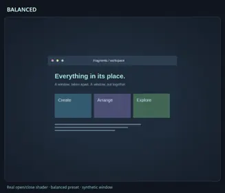
WINDOWS IN MOTION
Find your next effect.
Fragments, ribbons, springs and quiet ripples. Search 138 examples and play one at a time. Every preview starts paused.
Shader previews use synthetic content in Studio. Stock clips run in Niri; experimental clips require the patched compositor. Concepts are simulations. Resize is always opt-in.
138 examples


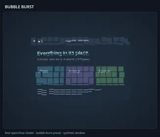

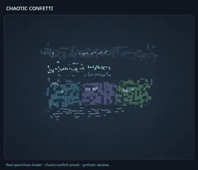

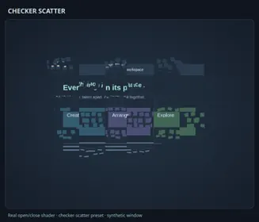

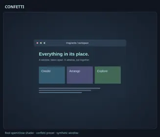

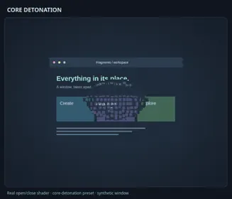

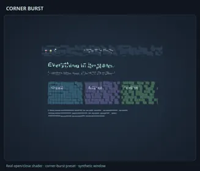

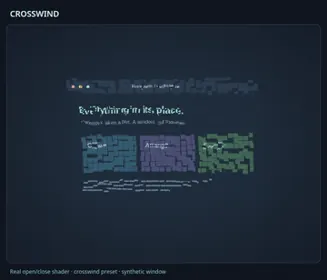

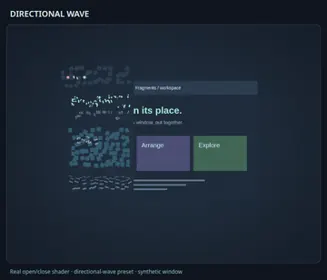

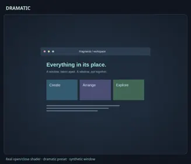

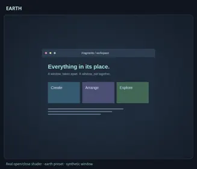


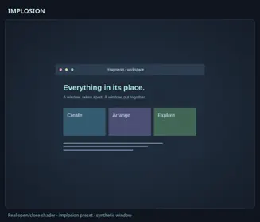

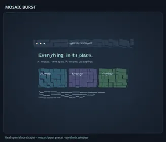

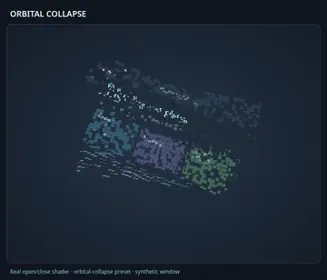

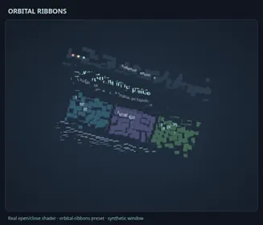


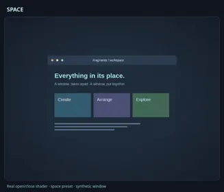

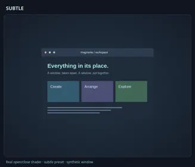

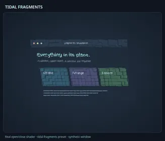


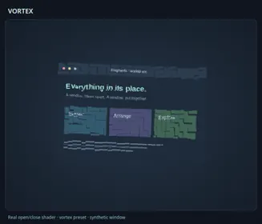

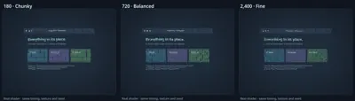
Compare Density
Fragments · shader
Open GIF Link
compare-density-1Try in StudioDownload JSON
compare-density-2Try in StudioDownload JSON
compare-density-3Try in StudioDownload JSON
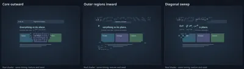
Compare Fragment Release
Fragments · shader
Open GIF Link
Core OutwardTry in StudioDownload JSON
Outer Regions InwardTry in StudioDownload JSON
Diagonal SweepTry in StudioDownload JSON
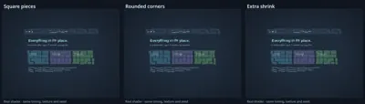
Compare Fragment Shapes
Fragments · shader
Open GIF Link
Square PiecesTry in StudioDownload JSON
Rounded CornersTry in StudioDownload JSON
Extra ShrinkTry in StudioDownload JSON
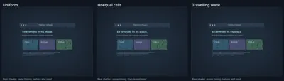
Compare Fragment Variation
Fragments · shader
Open GIF Link
UniformTry in StudioDownload JSON
Unequal CellsTry in StudioDownload JSON
Travelling WaveTry in StudioDownload JSON
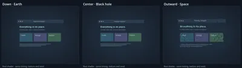
Compare Gravity
Fragments · shader
Open GIF Link
compare-gravity-1Try in StudioDownload JSON
compare-gravity-2Try in StudioDownload JSON
compare-gravity-3Try in StudioDownload JSON
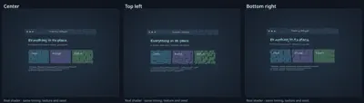
Compare Origin
Fragments · shader
Open GIF Link
Top LeftTry in StudioDownload JSON
Bottom RightTry in StudioDownload JSON
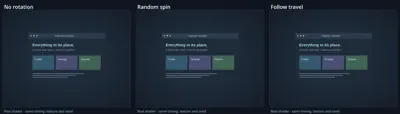
Compare Rotation
Fragments · shader
Open GIF Link
No RotationTry in StudioDownload JSON
Random SpinTry in StudioDownload JSON
Follow TravelTry in StudioDownload JSON
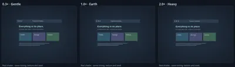
Compare Strength
Fragments · shader
Open GIF Link
compare-strength-1Try in StudioDownload JSON
compare-strength-2Try in StudioDownload JSON
compare-strength-3Try in StudioDownload JSON
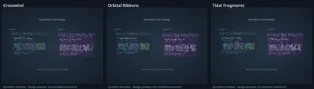
Compare Swap Styles
Fragments · concept
Open GIF Link
CrosswindEdit open/close styleDownload JSON
Orbital RibbonsEdit open/close styleDownload JSON
Tidal FragmentsEdit open/close styleDownload JSON
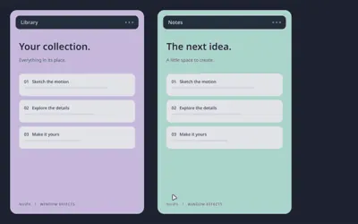

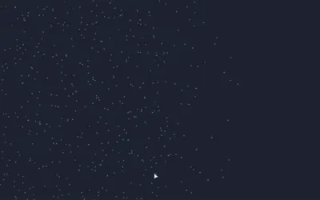

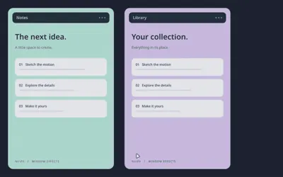

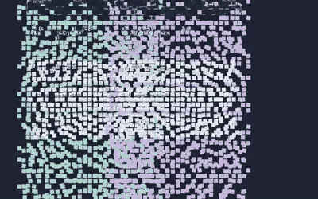

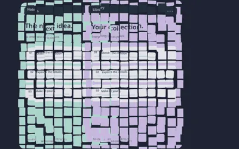

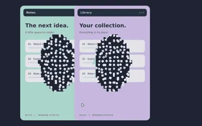

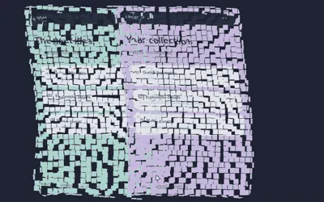

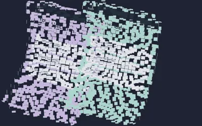

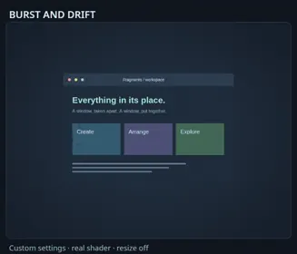

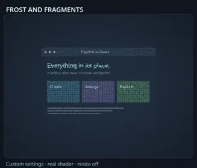

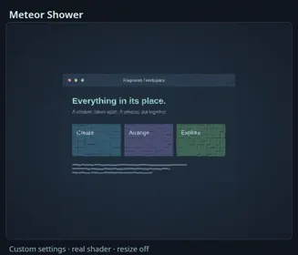

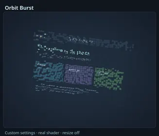

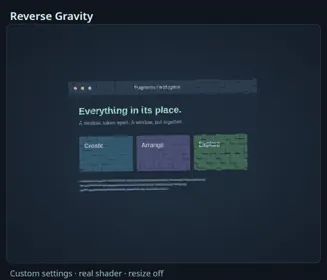

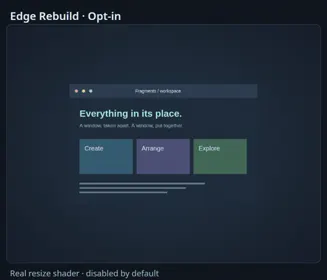

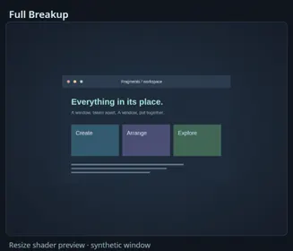

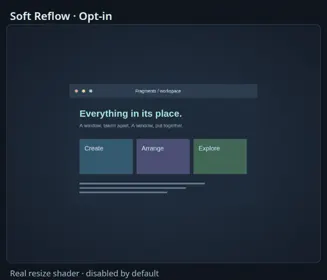


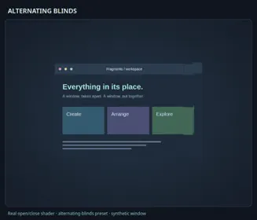

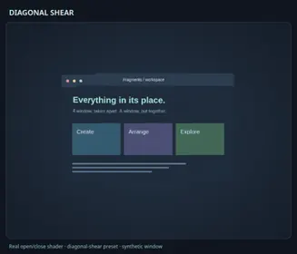

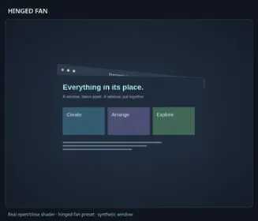

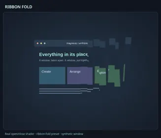

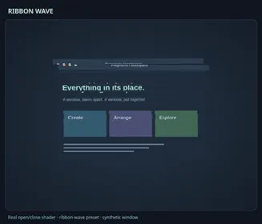

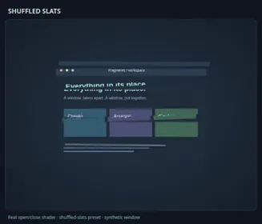


Compare Resize Families
Distortion · Elastic · Slices · shader
Open GIF Link
Elastic StretchTry in StudioDownload JSON
Accordion FoldsTry in StudioDownload JSON
Radial RipplesTry in StudioDownload JSON
Compare Slice Collapse
Slices · shader
Open GIF Link
No CollapseTry in StudioDownload JSON
Half CollapseTry in StudioDownload JSON
Full CollapseTry in StudioDownload JSON
Compare Slice Count
Slices · shader
Open GIF Link
4 SlicesTry in StudioDownload JSON
12 SlicesTry in StudioDownload JSON
32 SlicesTry in StudioDownload JSON
Compare Slice Directions
Slices · shader
Open GIF Link
Split HalvesTry in StudioDownload JSON
AlternatingTry in StudioDownload JSON
Random DirectionsTry in StudioDownload JSON
Compare Slice Hinges
Slices · shader
Open GIF Link
First EndTry in StudioDownload JSON
Other EndTry in StudioDownload JSON
Compare Slice Order
Slices · shader
Open GIF Link
ForwardTry in StudioDownload JSON
Center FirstTry in StudioDownload JSON
Random ReleaseTry in StudioDownload JSON


Compare Elastic
Elastic · shader
Open GIF Link
Spring WobbleTry in StudioDownload JSON
Rubber BandTry in StudioDownload JSON
Compare Elastic Transforms
Elastic · shader
Open GIF Link
Simple BendTry in StudioDownload JSON
Spring TwistTry in StudioDownload JSON
Threefold RippleTry in StudioDownload JSON


Compare Dissolve Flow
Dissolve · shader
Open GIF Link
compare-dissolve-flow-1Try in StudioDownload JSON
compare-dissolve-flow-2Try in StudioDownload JSON
compare-dissolve-flow-3Try in StudioDownload JSON
Compare Dissolve Scale
Dissolve · shader
Open GIF Link
compare-dissolve-scale-1Try in StudioDownload JSON
compare-dissolve-scale-2Try in StudioDownload JSON
compare-dissolve-scale-3Try in StudioDownload JSON
Compare Ember Palette
Dissolve · shader
Open GIF Link
compare-ember-palette-1Try in StudioDownload JSON
Black EdgeTry in StudioDownload JSON
Warm EdgeTry in StudioDownload JSON


Compare Iris Shapes
Iris · shader
Open GIF Link
compare-iris-shapes-1Try in StudioDownload JSON
compare-iris-shapes-2Try in StudioDownload JSON
compare-iris-shapes-3Try in StudioDownload JSON


Compare Dust Size
Pixels · shader
Open GIF Link
compare-dust-size-1Try in StudioDownload JSON
compare-dust-size-2Try in StudioDownload JSON
compare-dust-size-3Try in StudioDownload JSON
Compare Dust Wind
Pixels · shader
Open GIF Link
UpdraftTry in StudioDownload JSON
RightwardTry in StudioDownload JSON
FallingTry in StudioDownload JSON
Compare Pixel Directions
Pixels · shader
Open GIF Link
Center OutTry in StudioDownload JSON
Edges InTry in StudioDownload JSON
Left To RightTry in StudioDownload JSON
Compare Pixel Modes
Pixels · shader
Open GIF Link
Pixel WipeTry in StudioDownload JSON
PixelateTry in StudioDownload JSON
Drifting DustTry in StudioDownload JSON


Compare Wisp Curl
Wisps · shader
Open GIF Link
compare-wisp-curl-1Try in StudioDownload JSON
compare-wisp-curl-2Try in StudioDownload JSON
compare-wisp-curl-3Try in StudioDownload JSON
Compare Wisp Palette
Wisps · shader
Open GIF Link
White ThreadsTry in StudioDownload JSON
Ink ThreadsTry in StudioDownload JSON
Teal ThreadsTry in StudioDownload JSON


Compare Distortion Patterns
Distortion · shader
Open GIF Link
Shock FrontTry in StudioDownload JSON
Radial RipplesTry in StudioDownload JSON
Planar WavesTry in StudioDownload JSON
Compare Distortion Strength
Distortion · shader
Open GIF Link
compare-distortion-strength-1Try in StudioDownload JSON
compare-distortion-strength-2Try in StudioDownload JSON
compare-distortion-strength-3Try in StudioDownload JSON
Compare Shockwave Origin
Distortion · shader
Open GIF Link
Left EdgeTry in StudioDownload JSON
Lower CornerTry in StudioDownload JSON


No examples match. Try a different search or filter.